<ion-view view-title="" id="welcome">

  <div id="welcome-content">
    
    <h1>Welcome,<br/>{{logged.name}} !</h1>
    <h3>
      Now that you are registered,<br />
      you can save your favorites Qodes<br />
      but you can create new ones too.<br />
    </h3>
    <h3>
      Visit <b>Qode.be</b> with a computer<br />
      to build yours !
    </h3>
  </div>

</ion-view>
